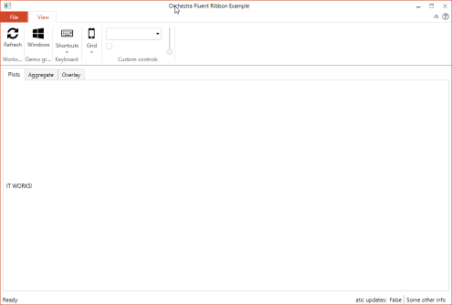
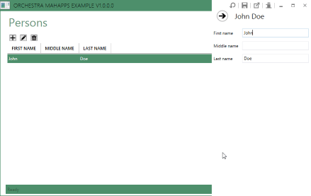
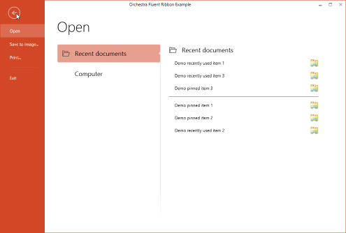

Orchestra
| Name | Badge |
|---|---|
| Chat |  Downloads Downloads |
| Stable version |  |
| Unstable version |  |
Find the source at https://github.com/WildGums/Orchestra
Orchestra is a composable WPF shell and framework built on top of Catel.
It has been in active development for over 5 years (initial commit 2012/06/18) and is used in numerous Line of Business (LoB) applications on a daily basis.
Orchestra consists of a main shell including an SDK with services that allow developers to communicate with the shell.
Goals
Provide a robust yet flexible LOB shell, designed with best practices in mind, to jump start the development of desktop applications.
In other words, we wanted to create a shell that dramatically speeds up the time it takes to release a LOB application to market by enabling developers to concentrate more on the business logic and less on scaffolding.
Available Shells
Orchestra provides support for two different shells:
- Fluent ribbon
- MahApps
| Fluent ribbon shell | MahApps shell |
|---|---|
|  |  |
|  |
NuGet packages
Prerequisites
A good working knowledge of Inversion of Control (IoC).
Orchestra features
- Application wide logging with an in app log viewer (CTRL + L)
- Command manager
- Shortcut key manager
- Fluent validation
- Themeable ‘about box’ window
- Themeable splash screen
- Consistent styling across the whole application
Orchestra + module features
We purposely designed Orchestra to be a lightweight shell. However you can ‘super charge’ it with the following open source libraries: (We use all these libraries with Orchestra. In fact they were designed to work seamlessly with Orchestra. Hint: the libraries all start with Orc.*)
- License management (Orc.LicenseManager)
- Project management (Orc.ProjectManagement)
- Automatic updates (Orc.NuGetExplorer Orc.Squirrel)
- Undo/Redo (Orc.Memento)
You can find the full list here.
Other similar open source projects
Have a question about WildGums projects? Use StackOverflow with the Catel tag!